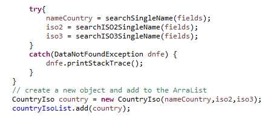

Les classes de données du paquetage data servent à instancier des objets en rapport avec un pays contenu dans un fichier. Une classe représente donc n'importe quel pays d'un fichier.
Autrement dit, une classe de donnée est un pays, avec ses informations.
Par exemple, la classe CountryIso instanciera un objet avec le nom du pays (par héritage), le code ISO2 et ISO3, qu'on trouve dans le fichier country_code_iso.csv.
De même, la classe CountryArea instanciera un objet avec le nom du pays (aussi par héritage) et sa superficie, qu'on récupère du fichier rawdata.txt.
N.B. : les classes possédant le mot Country sont liées au fichier détenant du texte.
Pour les classes concernant les images, contrairement au paragraphe ci-dessus, ce n'est pas le fichier qui sera notre liste et le pays notre objet.
Mais le dossier contenant les images qui représente notre liste et les fichiers images qui symbolisent nos objet (les informations qui m'intéressent sont dans le nom de l'image).
Par exemple, la classe ImageFlag correspond à n'importe quelle image du dossier flag. L'objet qui sera créé de cette classe comprendra le code ISO et le chemin du fichier image.
Maintenant, le plus gros morceau.
Les classes de données soient les fondations du programme, les classes de recherche sont toutes aussi importantes pour comprendre le fonctionnement globale de l'application.
Pour chaque fichier où une ou plusieurs données sont importantes, une classe contenant une ArrayList est créée.
Ensuite dans cette classe, une méthode que l'on pourrait nommer de pivot - mais qui s'appelle « getInfoFile() » va : lire le fichier spécifique, récupérer les données qui nous importe et les stocker dans des variables temporaires, créer un objet avec les informations fraîchement recueillies et les ajouter à l'ArrayList.

L'image ci-contre montre bien l'affectation du résultat de la recherche dans des variables temporaires, par le biais des méthodes searchName, SearchISO2 et searchISO3 (1). La création d'un nouvel objet avec les variables (2). L'ajout de cet objet à l'ArrayList (3).
Par exemple, continuons avec notre classe CountryIso. La méthode va donc lire le fichier country_code_iso.csv, et pour chaque pays, va créer et ajouter un objet CountryIso à l'ArrayList de la classe IsoCountryList. cf. Illustration 2,0.
Pour les ArrayList contenant des objets relatifs aux images, c'est le même principe. à la place de lire le contenu d'un fichier, la méthode va parcourir le contenu d'un dossier, créera et ajoutera un objet avec les données récupérées des noms de fichiers.
Exemple : la classe « FlagListImage » contient la fameuse méthode getInfoFile() qui, globalement, recherche, créée et ajoute des objets de type ImageFlag dans l'ArrayList